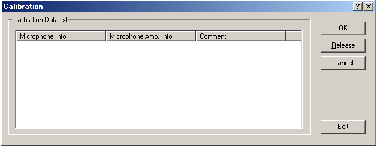
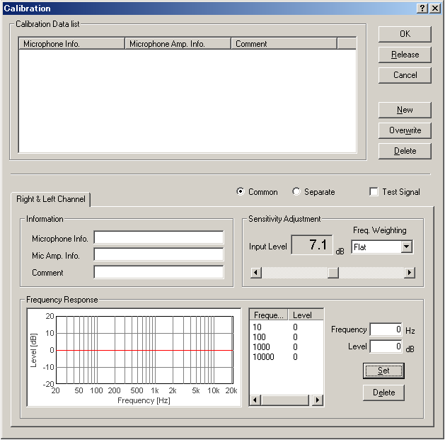

DSSF3 > RA > Reference Manual > FFT Analyzer

| Items | Description |
|---|---|
| Calibration Data list | Calibration data already stored in the database is displayed. |
| OK | Applies the selected calibration data. |
| Release | Releases the already applied calibration data. |
| Cancel | Closes the dialog without doing anything. |
| Edit | Opens the edit window for the calibration data. |

| Items | Description |
|---|---|
| Calibration Data list | Calibration data already stored in the database is displayed. |
| OK | Applies the selected calibration data. |
| Release | Releases the already applied calibration data. |
| Cancel | Closes the dialog without doing anything. |
| New | Saves the new calibration data. |
| Overwrite | Makes a change to the already stored calibration data. |
| Delete | Deletes the selected calibration data. |
| Items | Description |
|---|---|
| Information | Microphone Info., Mic Amp. Info. (optional), and Comment (optional) can be saved with the calibration data. |
| Frequency Response | Frequency response data is edited for compensation. The frequency response curve is created by entering [Frequency] and [Level] values. Only four frequencies of 10, 100, 1000, and 10000 are appeared in the list, but the new frequency values can be added by entering the number in the Frequency box and clicking the [Set] button. |
| Sensitivity Adjustment | Input level is indicated in dB. Frequency weighting can be selected from Flat, A-, B-, C-weighting. The input level can be adjusted by moving the scrollbar. Test signal (1kHz tone) can be generated. Note that the sensitivity adjustment for measuring the absolute sound pressure level must be done with the sound level meter or the acoustic calibrator. |

DSSF3 > RA > Reference Manual > FFT Analyzer